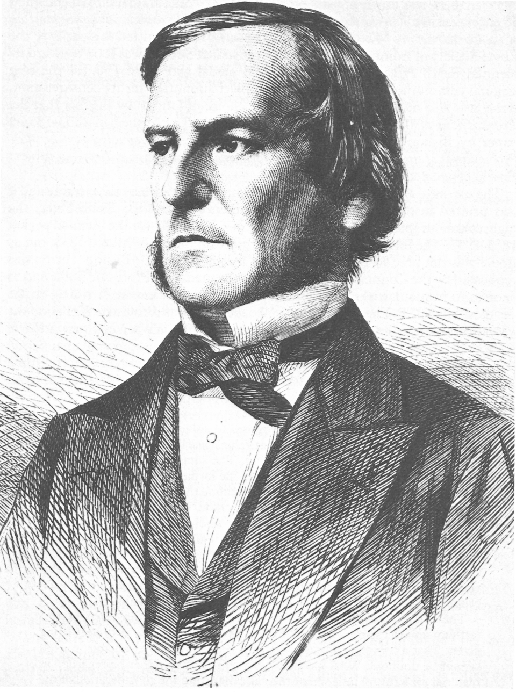
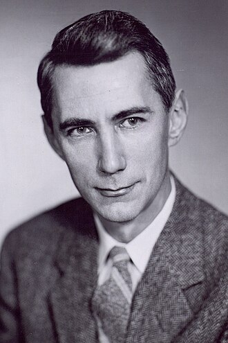

Theory & Mathematics
Before any computer existed, mathematicians worked out what a machine could and could not do. This floor is pure thought: logic, the definition of "computation" itself, how hard problems are, and the algebra that — in 2017 — gave us the Transformer. Everything above stands on this.
📚 What this floor is
Floor 1 doesn't need electricity. It is the mathematics of information and computation: what counts as a step, what can be solved, how long solving takes, and how to represent knowledge as numbers. A programmer rarely touches it directly — but every chip, algorithm and AI model is an answer to a question first asked here.
It matters for one reason this whole guide is built on: a change here doesn't stay here. Redefine what "computing efficiently" means, and you redraw every floor above.
The big ideas
Four foundations, each with a real situation where it shows up.
🧠 1. What a computer even is (computability)
In 1936, Alan TuringBritish mathematician, 1912–1954. His 1936 paper "On Computable Numbers" defined the abstract machine that became the model for every real computer. described an imaginary machine to explain what computing is. Imagine a player piano that reads music from a long roll of paper with holes punched in it. Or a typewriter that reads a symbol on a paper tape, changes it based on a rulebook, and slides the tape left or right. Turing proved that this simple paper-sliding machine can solve any math problem that can possibly be computed! This idea is called the **Church-Turing Thesis**.
But he also proved something warning-worthy: some questions no computer can ever answer. For example, you can never write a master program that can look at any other program's code and guess if it will eventually finish or hang forever (the Halting Problem). The proof is a logical paradox: if such a checking program existed, you could write a second program that does the exact opposite of whatever the checker predicts. If the checker says it will halt, the program loops forever; if the checker says it loops, the program halts. Running this program on itself creates an impossible contradiction, proving a perfect checker cannot exist.
Every time an app freezes on an "infinite loading" spinner, you are looking at the halting problem. Turing proved that no software tool can perfectly detect, ahead of time, that a program will hang — which is why bugs and crashes can never be completely designed away.
Turing's paper tape (Floor 1) was turned into physical circuits and memory chips (Floor 2) by engineers. Operating systems (Floor 3) and software languages (Floor 5) were built to control these steps, but they all obey the absolute limits Turing proved in 1936.


Mathematicians wanted to know if every true statement could be proved by a fixed mechanical procedure (the Entscheidungsproblem).
To prove the answer was "no," Turing first had to define a machine that follows steps — and that definition became the blueprint for every computer.
📶 2. Measuring information itself (information theory)
In 1948, Claude ShannonAmerican mathematician, 1916–2001. His 1948 paper "A Mathematical Theory of Communication" founded information theory and named the "bit". showed that information isn't an abstract feeling — it can be measured like sugar or flour. He named the basic unit the bit (binary digit).
Think of a bit as a single Yes/No question. If you want to guess a secret number between 1 and 8, you can do it in exactly 3 Yes/No questions (e.g., "Is it greater than 4?"). That secret number contains exactly 3 bits of information. Shannon called this average uncertainty Entropy, written as: \[ H(X) = -\sum P(x_i) \log_2 P(x_i) \] It represents the minimum number of Yes/No questions needed to guess an outcome. For a fair coin flip, the entropy is exactly $1.0$ bit. But for a loaded coin that lands heads 90% of the time, the entropy is only about $0.47$ bits, because you can guess it right most of the time without asking much!
Shannon also proved the limit of how fast you can send data through a noisy channel, called the Channel Capacity: \[ C = B \log_2\left(1 + \frac{S}{N}\right) \] where $B$ is the frequency range (bandwidth) and $S/N$ is how loud the signal is compared to the static noise. It is like talking in a crowded classroom: if the classroom gets too noisy, you have to slow down your words to be understood.
A song streaming cleanly over a weak signal, a photo shrinking into a small JPG file, a video call surviving a patchy Wi-Fi connection — all of it runs on the limits Shannon proved. He is the reason "bit" is a word.
Shannon's bits (Floor 1) are represented by physical voltages on transistors (Floor 2). When you send files over Wi-Fi (Floor 4), network routers use Shannon's math to compress files and check for static mistakes along the wires.


⏱️ 3. How hard is a problem? (complexity & P vs NP)
Some problems are quick to solve; others are quick only to check. The deepest open question in computer science, the P versus NP problemOne of the seven Millennium Prize Problems, each carrying a US$1,000,000 award. Stated precisely by Stephen Cook in 1971, and independently by Leonid Levin in 1973., asks if every problem whose answer is fast to verify is also fast to solve from scratch.
Imagine a **locked treasure chest** with a code dial. If I hand you the correct code, you can open it and **check** it instantly (that is a fast check, or "NP"). But if you have to **find** the code yourself from scratch by guessing a trillion combinations, it will take you years (that is hard to solve, or "P vs NP" boundary).
In 1971, Stephen Cook and Leonid Levin discovered that some hard problems are **NP-complete**. These are like master puzzle keys: if someone finds a fast shortcut to solve even *one* NP-complete problem, they can use it to solve *all* NP problems instantly. If $P = NP$, there are no hard puzzles, and finding answers is as easy as checking them.
It is easy to check a finished Sudoku, but hard to fill one in. That gap is the whole point of P vs NP — and it is the reason online security works: scrambling a password is fast, but unscrambling it without the key is (as far as anyone can prove) impossibly slow.
Modern internet security (Floor 4) and banking databases (Floor 5) rely on the gap between easy-to-check and hard-to-solve. For example, multiplying two giant prime numbers is incredibly fast, but factoring the result back into prime numbers takes computers billions of years. If someone proves $P = NP$, all current encryption shuts down overnight.
🔢 4. Turning meaning into numbers (linear algebra)
Computers don't understand words or pictures — they understand numbers in grids, called vectors (lists of numbers) and matrices (grids of numbers). The branch of math for combining those grids is linear algebra.
Imagine a **treasure map**. You can point to any spot on the map using just two coordinates: East-West and North-South (like `[5, 3]`). In AI, we map words as coordinates on a giant "meaning map". Modern models don't just use 2 dimensions, but hundreds (like a 1536-dimensional space!). Similar words (like "cat" and "kitten") are placed very close to each other.
To find how close two words are, we calculate the angle between their coordinate arrows. This is called **cosine similarity**: \[ \text{Similarity}(\mathbf{A}, \mathbf{B}) = \frac{\mathbf{A} \cdot \mathbf{B}}{\|\mathbf{A}\| \|\mathbf{B}\|} \] If the arrows point in the exact same direction, the similarity is $1.0$ (identical meaning). If they point at right angles, it is $0.0$ (completely unrelated).
The 2017 Transformer reframed "understand this sentence" as a giant pile of matrix multiplications — pure linear algebra. That single mathematical choice is what made modern AI possible, because matrix math can be run on thousands of processors at once. The idea lives here on Floor 1; its consequences fill every floor above. See the cascade →
Let's map words using just two scores: "How fluffy is it?" (0 to 10) and "How big is it?" (0 to 10):
- 🐾 Hamster = Fluffy (9), Small (1) → Coordinate:
[9, 1] - 🦁 Lion = Fluffy (6), Big (7) → Coordinate:
[6, 7] - 🚗 Car = Fluffy (0), Big (8) → Coordinate:
[0, 8]
Notice how the **Hamster** is closer to the **Lion** (both are living, somewhat fluffy creatures) than to the **Car**. By using hundreds of scores instead of just two, AI models can map the meaning of every word in human language!
This grid math (Floor 1) is run on physical GPU cores (Floor 2) using NVIDIA's parallel CUDA language (Floor 3) and Python libraries (Floor 5) to train modern language models (Floor 6) that power conversational chat apps (Floor 7).
How this floor evolved
The bedrock moves rarely — but when it does, everything moves.
Paper & proof
From the 1930s, logicians like Turing and Church defined computation with nothing but pencil and paper — decades before a single circuit was built.
The math runs the world
Cryptography secures every login; complexity theory shapes every algorithm; linear algebra powers every AI model. Theory is no longer abstract — it is infrastructure.
Quantum & new algorithms
Quantum computing redefines what "a step" means, and new architectures (like the Transformer) keep rewriting which problems are practical. The floor is still moving.
Ada Lovelace writes the first algorithm designed to be run by Babbage's Analytical Engine, showing that computers could manipulate symbols beyond numbers, including music and art.
George Boole publishes a mathematical system of logic where variables can only be True (1) or False (0), combined using AND, OR, and NOT gates.
Alan Turing defines the abstract machine that models every computer ever built — years before the hardware existed. The blueprint of computing starts as a piece of pure mathematics.
"A Mathematical Theory of Communication" gives the world the bit, and the laws of compression and error-free transmission that the entire internet still obeys.
Stephen Cook formalises the question of which problems are truly hard. It becomes the most famous unsolved problem in computer science — and the bedrock under modern cryptography.
"Attention Is All You Need" reframes understanding language as parallel linear algebra. A Floor-1 change that rebuilt every floor above it.
⚡ This floor's role in the 2017 cascade
Floor 1 is the source of the cascade. The Transformer was not a faster chip or a new app — it was a new algorithm, a fresh piece of mathematics about how to process a sequence. Because it lives on the bottom floor, and because it happened to be expressible as massively parallel matrix math, it forced new hardware, new systems, new software, and a whole new AI floor into existence. When people ask "why is this AI wave different?", the honest answer is: the bedrock changed.